同一台 OnePlus6，同一套 Mobilerun Portal 读屏 + adb 执行，只有「下一步做什么」由谁决定这一点不同： 一组交给 Jev 逐步决策，另一组把步骤人工写死在代码里。
elements[index] 的下标；
红色准星 = 模型这一步实际选中的目标。图片底部信息带写着目标、解析/候选计数与本次置信度。
快速跳转：01 搜洗衣液 → 加购物车（失败样本，已冻结） · 02 把鸡蛋加入购物车并确认 · 03 设一个明早 7:30 的闹钟 · 04 新建一条「明天带伞」
| 案例 | 引擎 | 场景 | 终态 | 步数 | 端到端 | 模型耗时 | 花费 | 校验基准 |
|---|---|---|---|---|---|---|---|---|
| F1-pdd-add-cart | Jev 决策 | 拼多多：搜洗衣液 → 加购物车（失败样本，已冻结） | 卡住（重复动作） | 15 | 104.1s | 9.9s | $0.00577 | 购物车页里能看到刚加进去的洗衣液商品 |
| L1-maicai-cart-jev | Jev 决策 | 多多买菜：把鸡蛋加入购物车并确认 | 已完成 | 3 | 27.1s | 3.4s | $0.00156 | 购物车（已选商品）里出现鸡蛋条目 |
| L1-maicai-cart-script | 写死脚本 | 多多买菜：同一任务，改为写死步骤（不用 Jev） | 脚本中断 | 4 | 30.3s | 0.0s | $0.00000 | 购物车（已选商品）里出现鸡蛋条目 |
| L2-alarm-jev | Jev 决策 | 时钟：设一个明早 7:30 的闹钟 | 卡住（重复动作） | 5 | 25.0s | 3.2s | $0.00117 | 闹钟列表里出现 7:30 的闹钟条目 |
| L2-alarm-script | 写死脚本 | 时钟：同一任务，改为写死步骤（不用 Jev） | 已完成 | 12 | 31.6s | 0.0s | $0.00000 | 闹钟列表里出现 7:30 的闹钟条目 |
| L3-note-jev | Jev 决策 | 便签：新建一条「明天带伞」 | 已完成 | 4 | 22.6s | 2.5s | $0.00082 | 便签列表里出现内容为「明天带伞」的新便签 |
| L3-note-script | 写死脚本 | 便签：同一任务，改为写死步骤（不用 Jev） | 已完成 | 9 | 30.0s | 0.0s | $0.00000 | 便签列表里出现内容为「明天带伞」的新便签 |
生活里最顺口的长程需求，也是本次跑批里唯一失败的样本。前 5 步一切正常（拉起 App → 点搜索框 → 打字 → 提交 → 进第一款商品详情页），但拼多多的商品详情页**没有『加入购物车』入口**（只有『免拼购买』『发起拼单』）。模型随后开始来回滚动、返回、重复点击，第 15 步触发 stuck 保护退出。教训：长程任务的成败往往取决于**目标在界面上是否真的可达**，而不是模型的推理能力。
横条长度 = 该步耗时（最长 950 ms）
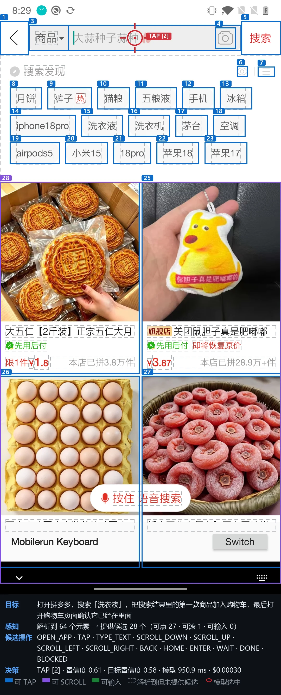
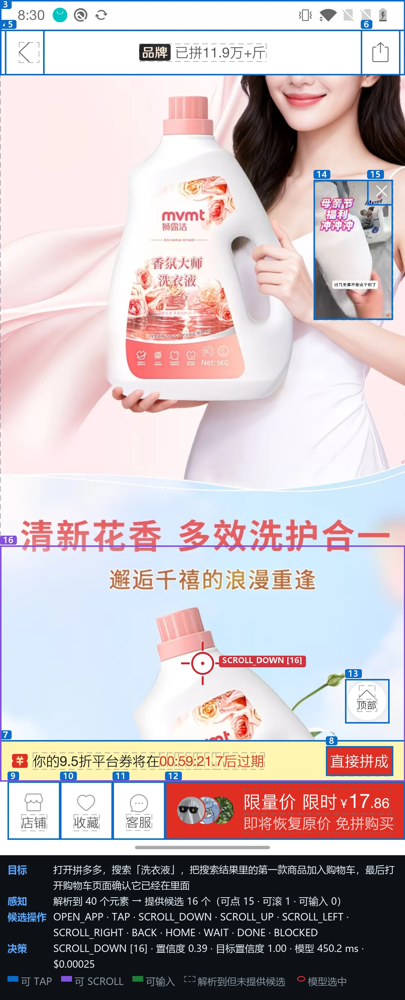
| 终态校验（读无障碍树） | 结果 |
|---|---|
| 洗衣液 | 出现 |
{
"goal": "打开拼多多，搜索「洗衣液」，把搜索结果里的第一款商品加入购物车，最后打开购物车页面确认它已经在里面",
"app": "com.xunmeng.pinduoduo",
"visibleText": [
"返回",
"按住 语音搜索",
"返回",
"大蒜种子蒜种",
"搜索",
"商品",
"商品",
"拍照搜索",
"搜索",
"搜索发现"
],
"recentActions": [
{
"operation": "TAP",
"label": "Focus text input: 大蒜种子蒜种.",
"screenChanged": false
}
],
"elements": [
{
"index": "1",
"label": "返回",
"editable": false,
"scrollable": false,
"operations": [
"TAP"
]
},
{
"index": "2",
"label": "Focus text input: 大蒜种子蒜种",
"editable": true,
"scrollable": false,
"operations": [
"TAP"
]
},
{
"index": "3",
"label": "商品",
"editable": false,
"scrollable": false,
"operations": [
"TAP"
]
},
{
"index": "4",
"label": "拍照搜索",
"editable": false,
"scrollable": false,
"operations": [
"TAP"
]
},
{
"…": "共 28 个候选，此处截断"
}
]
}完整文件：artifacts/cases/F1-pdd-add-cart/step-02/request.json
返回的不是一段话，而是每个问题一张概率表。标红项就是被采纳的 choice——校验规则要求它必须是最大项、且概率和归一到 1。
question operation type=choice 答案=TYPE_TEXT 置信度=0.46
| TYPE_TEXT | 0.510 | |
| TAP | 0.480 | |
| OPEN_APP | 0.010 | |
| SCROLL_UP | 0.000 | |
| SCROLL_DOWN | 0.000 | |
| HOME | 0.000 | |
| ENTER | 0.000 | |
| SCROLL_RIGHT | 0.000 | |
| DONE | 0.000 | |
| BACK | 0.000 |
question app_target type=choice 答案=33 置信度=0.55
| 33 | 0.570 | |
| 27 | 0.110 | |
| 1 | 0.050 | |
| 8 | 0.050 | |
| 32 | 0.050 | |
| 15 | 0.030 | |
| 34 | 0.030 | |
| 14 | 0.020 | |
| 25 | 0.020 | |
| 2 | 0.010 |
question tap_target type=choice 答案=15 置信度=0.47
| 2 | 0.500 | |
| 15 | 0.490 | |
| 5 | 0.010 | |
| 1 | 0.000 | |
| 3 | 0.000 | |
| 4 | 0.000 | |
| 6 | 0.000 | |
| 7 | 0.000 | |
| 8 | 0.000 | |
| 9 | 0.000 |
question scroll_target type=choice 答案=28 置信度=1
| 28 | 1.000 |
question text_value type=choice 答案=1 置信度=0.97
| 1 | 0.990 | |
| NONE | 0.010 |
实际服务模型 typesafe/jev-1.13-20260917，响应 id gen-dec-1789734560-c9XzOCmQalVY6AnnYwut
产物目录 artifacts/cases/F1-pdd-add-cart
换一条**界面上确实存在**的购物路径：多多买菜每个商品都有『+』加购按钮，底部有一条购物车栏。跨 4 层（首页 → 多多买菜 → 商品列表 → 购物车），既不短也不依赖详情页里不存在的按钮。
| 维度 | Jev 决策 | 写死脚本 |
|---|---|---|
| 决策方式 | 每步一次 Jev 调用 | 零模型调用，流程写死在代码里 |
| 端到端耗时 | 27.1 | 30.3 |
| 模型推理耗时 | 3.4 秒 | 0 秒（无模型） |
| 固定等待 | 0.0 秒 | 3.0 秒 |
| 步骤数 | 3 | 4 |
| 终态校验 | 通过 | 未通过 |
| 模型花费 | $0.00156 | $0 |
| 校验命中 | 1/1 | 0/1 |
| 换任务要改什么 | 改一行 goal 字符串 | 重写整张步骤表 / 重新量坐标 |
横条长度 = 该步耗时（最长 1008 ms）
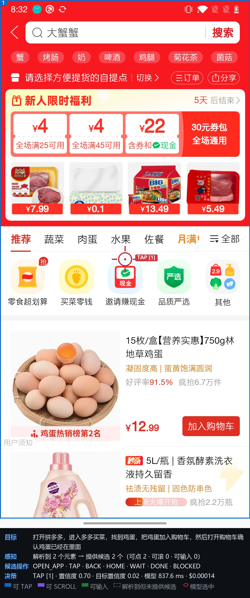
| 终态校验（读无障碍树） | 结果 |
|---|---|
| 鸡蛋 | 出现 |
{
"goal": "打开拼多多，进入多多买菜，找到鸡蛋，把鸡蛋加入购物车，然后打开购物车确认鸡蛋已经在里面",
"app": "com.xunmeng.pinduoduo",
"visibleText": [
"拍照搜索",
"洗衣液",
"搜索",
"拍照搜索",
"推荐",
"手机",
"食品",
"百货",
"女装",
"医药"
],
"recentActions": [
{
"operation": "BACK",
"label": "{\"type\":\"global\",\"name\":\"back\"}",
"screenChanged": true
}
],
"elements": [
{
"index": "1",
"label": "洗衣液 / 搜索 / 拍照搜索",
"editable": false,
"scrollable": false,
"operations": [
"TAP"
]
},
{
"index": "2",
"label": "拍照搜索",
"editable": false,
"scrollable": false,
"operations": [
"TAP"
]
},
{
"index": "3",
"label": "推荐",
"editable": false,
"scrollable": false,
"operations": [
"TAP"
],
"selected": true
},
{
"index": "4",
"label": "手机",
"editable": false,
"scrollable": false,
"operations": [
"TAP"
]
},
{
"…": "共 37 个候选，此处截断"
}
]
}完整文件：artifacts/cases/L1-maicai-cart-jev/step-02/request.json
返回的不是一段话，而是每个问题一张概率表。标红项就是被采纳的 choice——校验规则要求它必须是最大项、且概率和归一到 1。
question operation type=choice 答案=TAP 置信度=0.98
| TAP | 0.990 | |
| OPEN_APP | 0.010 | |
| SCROLL_DOWN | 0.000 | |
| WAIT | 0.000 | |
| SCROLL_RIGHT | 0.000 | |
| DONE | 0.000 | |
| BACK | 0.000 | |
| SCROLL_LEFT | 0.000 | |
| HOME | 0.000 | |
| SCROLL_UP | 0.000 |
question app_target type=choice 答案=33 置信度=0.33
| 33 | 0.360 | |
| 32 | 0.150 | |
| 17 | 0.120 | |
| 27 | 0.090 | |
| 1 | 0.060 | |
| 25 | 0.060 | |
| 8 | 0.020 | |
| 9 | 0.020 | |
| 34 | 0.020 | |
| 35 | 0.020 |
question tap_target type=choice 答案=17 置信度=0.95
| 17 | 0.960 | |
| 1 | 0.040 | |
| 2 | 0.000 | |
| 3 | 0.000 | |
| 4 | 0.000 | |
| 5 | 0.000 | |
| 6 | 0.000 | |
| 7 | 0.000 | |
| 8 | 0.000 | |
| 9 | 0.000 |
question scroll_target type=choice 答案=37 置信度=0.9
| 37 | 0.950 | |
| 36 | 0.050 |
实际服务模型 typesafe/jev-1.13-20260917，响应 id gen-dec-1789734730-MKsNOMQ1h1YAkKQDFNLv
产物目录 artifacts/cases/L1-maicai-cart-jev
横条长度 = 该步耗时（最长 15157 ms）
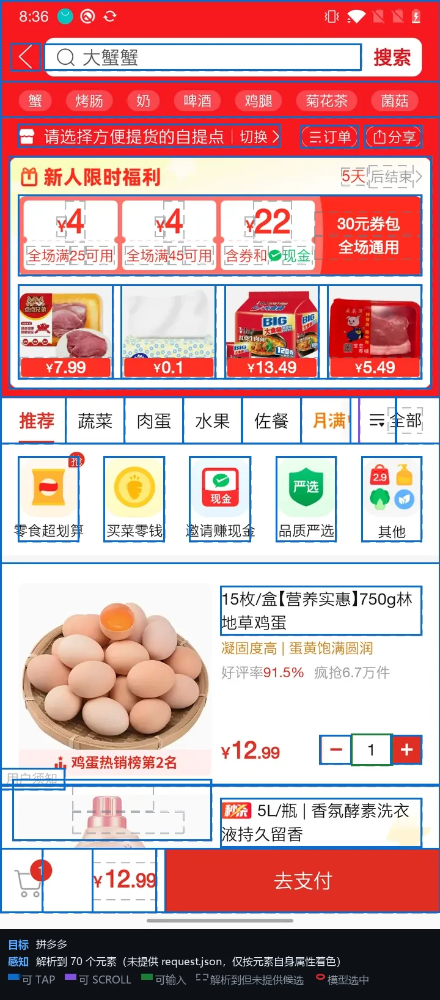
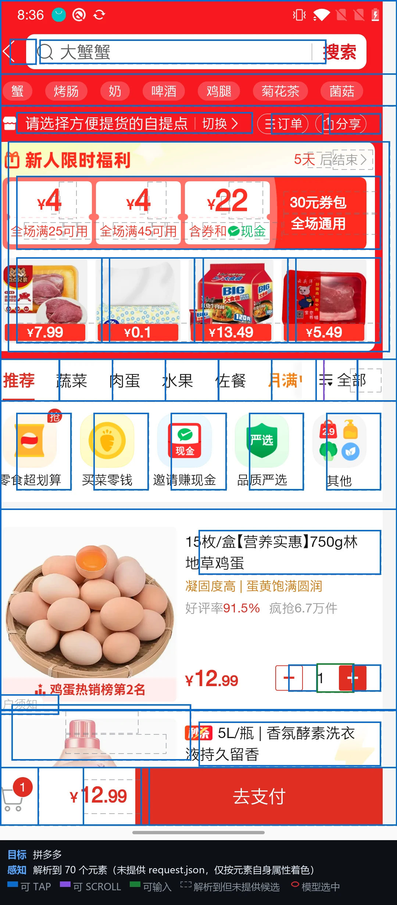
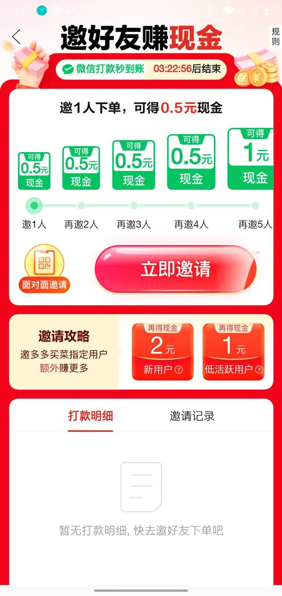
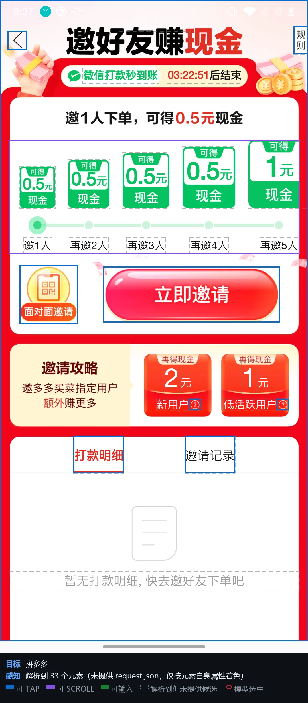
| 终态校验（读无障碍树） | 结果 |
|---|---|
| 鸡蛋 | 未出现 |
等待超时：15000ms 内没有出现「点击加入购物车」| # | 类型 | 参数 | 说明 |
|---|---|---|---|
| 1 | sleep | 3000 | 等拼多多冷启动 |
| 2 | 轮询等到首页出现「多多买菜」 | ||
| 3 | tapText | 多多买菜 | 点「多多买菜」入口 |
| 4 | 轮询等到商品列表渲染完 | ||
| 5 | tapText | 点击加入购物车 | 点鸡蛋这一行的加购按钮 |
| 6 | sleep | 2500 | 固定等 2.5s 让加购动画和购物车栏更新 |
| 7 | expect | 鸡蛋 | 断言鸡蛋已进购物车 |
脚本引擎与 Jev 引擎共用同一份 PortalDevice，差的只是「下一步做什么」由谁决定：这里由上面这张表决定。
产物目录 artifacts/cases/L1-maicai-cart-script
典型的『状态型』长程任务：要切到闹钟标签页、点新建、在滚轮选择器上把时间拨到 7:30、再确认保存。滚轮是非标准控件，最能看出两套方案的差别。
| 维度 | Jev 决策 | 写死脚本 |
|---|---|---|
| 决策方式 | 每步一次 Jev 调用 | 零模型调用，流程写死在代码里 |
| 端到端耗时 | 25.0 | 31.6 |
| 模型推理耗时 | 3.2 秒 | 0 秒（无模型） |
| 固定等待 | 0.1 秒 | 7.0 秒 |
| 步骤数 | 5 | 12 |
| 终态校验 | 未通过 | 通过 |
| 模型花费 | $0.00117 | $0 |
| 校验命中 | 0/1 | 1/1 |
| 换任务要改什么 | 改一行 goal 字符串 | 重写整张步骤表 / 重新量坐标 |
横条长度 = 该步耗时（最长 762 ms）
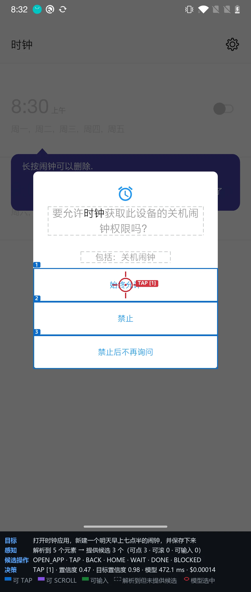
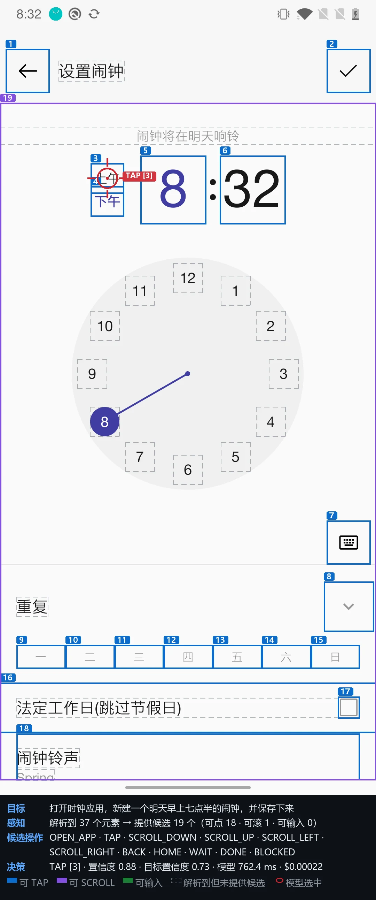
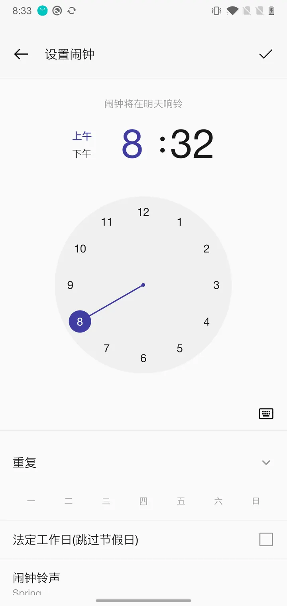
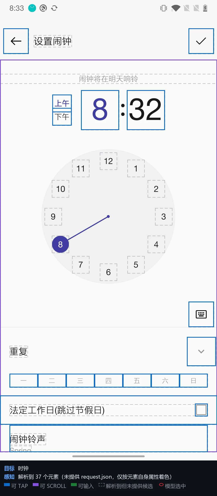
| 终态校验（读无障碍树） | 结果 |
|---|---|
| 7:30 | 未出现 |
{
"goal": "打开时钟应用，新建一个明天早上七点半的闹钟，并保存下来",
"app": "com.oneplus.deskclock",
"visibleText": [
"时钟",
"设置",
"8:30 上午",
"8:30 上午",
"关闭",
"周一, 周二, 周三, 周四, 周五",
"星期一, 星期二, 星期三, 星期四, 星期五",
"9:00 上午",
"9:00 上午",
"关闭"
],
"recentActions": [
{
"operation": "TAP",
"label": "Tap 始终允许.",
"screenChanged": true
}
],
"elements": [
{
"index": "1",
"label": "设置",
"editable": false,
"scrollable": false,
"operations": [
"TAP"
]
},
{
"index": "2",
"label": "8:30 上午 / 关闭 / 周一, 周二, 周三, 周四, 周五 / 星期一, 星期二, 星期三, 星期四, 星期五",
"editable": false,
"scrollable": false,
"operations": [
"TAP"
]
},
{
"index": "3",
"label": "关闭",
"editable": false,
"scrollable": false,
"operations": [
"TAP"
],
"checked": false
},
{
"index": "4",
"label": "9:00 上午 / 关闭 / 周六, 周日 / 星期六, 星期日",
"editable": false,
"scrollable": false,
"operations": [
"TAP"
]
},
{
"…": "共 7 个候选，此处截断"
}
]
}完整文件：artifacts/cases/L2-alarm-jev/step-02/request.json
返回的不是一段话，而是每个问题一张概率表。标红项就是被采纳的 choice——校验规则要求它必须是最大项、且概率和归一到 1。
question operation type=choice 答案=TAP 置信度=0.82
| TAP | 0.840 | |
| OPEN_APP | 0.060 | |
| BACK | 0.040 | |
| BLOCKED | 0.030 | |
| WAIT | 0.020 | |
| HOME | 0.010 | |
| DONE | 0.000 |
question app_target type=choice 答案=2 置信度=0.47
| 2 | 0.490 | |
| 1 | 0.200 | |
| 24 | 0.140 | |
| 37 | 0.070 | |
| 4 | 0.030 | |
| 9 | 0.030 | |
| 8 | 0.020 | |
| 14 | 0.010 | |
| 27 | 0.010 | |
| 3 | 0.000 |
question tap_target type=choice 答案=7 置信度=0.48
| 7 | 0.550 | |
| 1 | 0.290 | |
| 2 | 0.080 | |
| 6 | 0.060 | |
| 3 | 0.010 | |
| 4 | 0.010 | |
| 5 | 0.000 |
实际服务模型 typesafe/jev-1.13-20260917，响应 id gen-dec-1789734764-KW6DQjaPLkPez3RbhzfZ
产物目录 artifacts/cases/L2-alarm-jev
横条长度 = 该步耗时（最长 2002 ms）
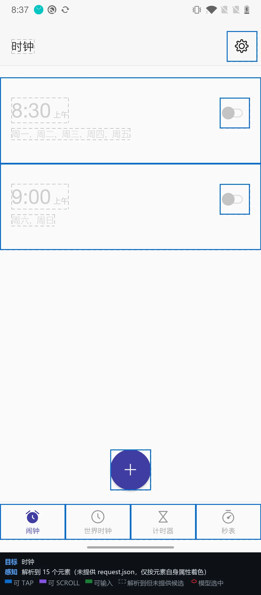
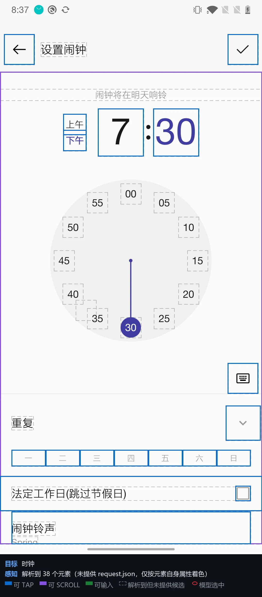
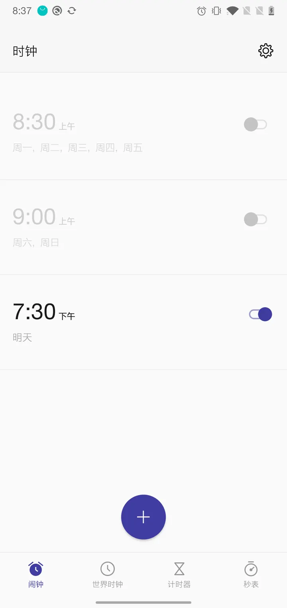
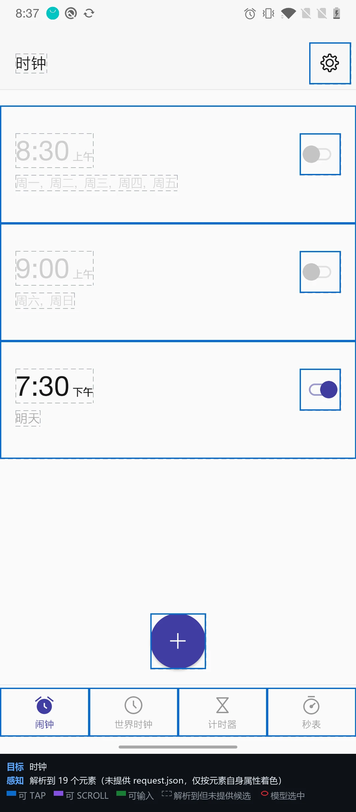
| 终态校验（读无障碍树） | 结果 |
|---|---|
| 7:30 | 出现 |
| # | 类型 | 参数 | 说明 |
|---|---|---|---|
| 1 | tapText | 始终允许 | 一次性权限弹窗（若出现则点，否则跳过） |
| 2 | tapText | 知道了 | 一次性引导卡（若出现则点，否则跳过） |
| 3 | sleep | 1500 | 固定等 1.5s |
| 4 | tap | 540, 1939 | 点新建闹钟（该按钮只暴露 contentDescription=开始，脚本只能写死坐标） |
| 5 | sleep | 2000 | 固定等闹钟编辑页 |
| 6 | tapText | 7 | 在小时表盘上点 7 |
| 7 | sleep | 1200 | 固定等表盘切到分钟 |
| 8 | tapText | 30 | 在分钟表盘上点 30 |
| 9 | sleep | 800 | 固定等一下 |
| 10 | tap | 1010, 210 | 点右上角 ✓ 保存 |
| 11 | sleep | 1500 | 固定等返回列表 |
| 12 | expect | 7:30 | 断言闹钟列表里出现 7:30 |
脚本引擎与 Jev 引擎共用同一份 PortalDevice，差的只是「下一步做什么」由谁决定：这里由上面这张表决定。
产物目录 artifacts/cases/L2-alarm-script
唯一需要中文打字的场景。输入走 Portal 的键盘接口（无障碍 ACTION_SET_TEXT），不走 adb input；保存后还要自己回到列表页。
| 维度 | Jev 决策 | 写死脚本 |
|---|---|---|
| 决策方式 | 每步一次 Jev 调用 | 零模型调用，流程写死在代码里 |
| 端到端耗时 | 22.6 | 30.0 |
| 模型推理耗时 | 2.5 秒 | 0 秒（无模型） |
| 固定等待 | 0.0 秒 | 6.8 秒 |
| 步骤数 | 4 | 9 |
| 终态校验 | 通过 | 通过 |
| 模型花费 | $0.00082 | $0 |
| 校验命中 | 1/1 | 1/1 |
| 换任务要改什么 | 改一行 goal 字符串 | 重写整张步骤表 / 重新量坐标 |
横条长度 = 该步耗时（最长 572 ms）
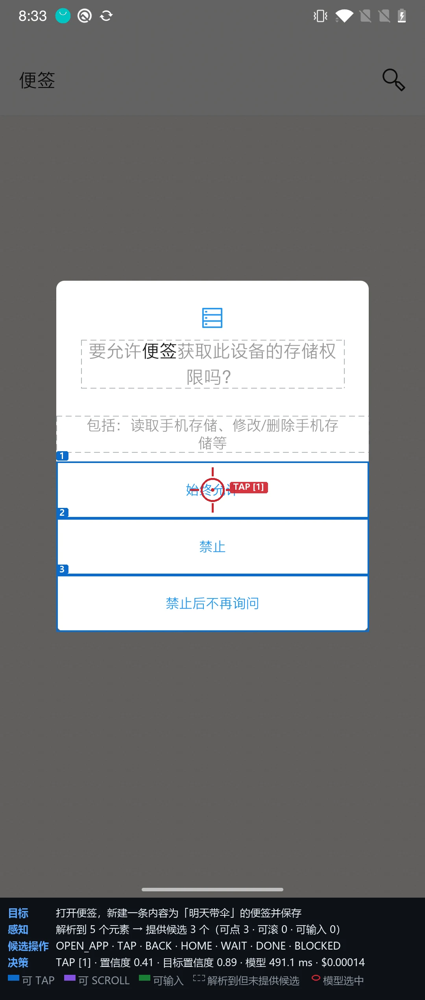
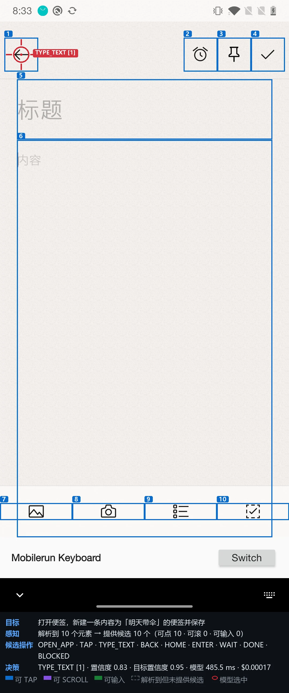
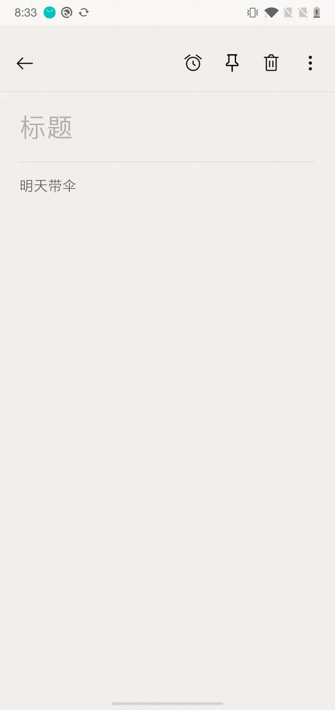
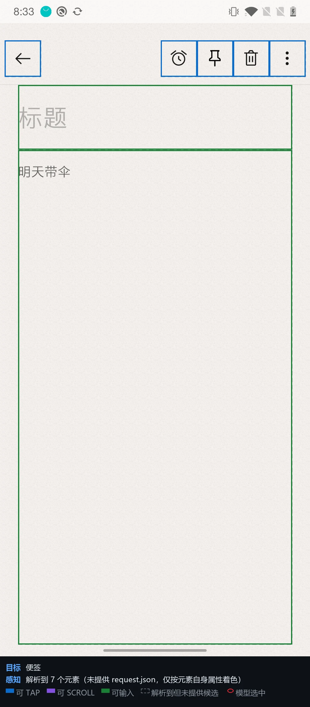
| 终态校验（读无障碍树） | 结果 |
|---|---|
| 明天带伞 | 出现 |
{
"goal": "打开便签，新建一条内容为「明天带伞」的便签并保存",
"app": "com.oneplus.note",
"visibleText": [
"便签",
"搜索便签",
"欢迎使用便签",
"你可以在便签里快速记录灵感，并支持添加图片、项目列表、待办事件。",
"星期五 下午8:33",
"在氢视窗中查看",
"你可以将便签显示在氢视窗中，方便你随时查看。",
"星期五 下午8:33",
"通过图片分享",
"你可以将你的便签内容生成为长图片，方便你分享到社交平台。"
],
"recentActions": [
{
"operation": "TAP",
"label": "Tap 始终允许.",
"screenChanged": true
}
],
"elements": [
{
"index": "1",
"label": "搜索便签",
"editable": false,
"scrollable": false,
"operations": [
"TAP"
]
},
{
"index": "2",
"label": "欢迎使用便签 / 你可以在便签里快速记录灵感，并支持添加图片、项目列表、待办事件。 / 星期五 下午8:33",
"editable": false,
"scrollable": false,
"operations": [
"TAP"
]
},
{
"index": "3",
"label": "在氢视窗中查看 / 你可以将便签显示在氢视窗中，方便你随时查看。 / 星期五 下午8:33",
"editable": false,
"scrollable": false,
"operations": [
"TAP"
]
},
{
"index": "4",
"label": "通过图片分享 / 你可以将你的便签内容生成为长图片，方便你分享到社交平台。 / 星期五 下午8:33",
"editable": false,
"scrollable": false,
"operations": [
"TAP"
]
},
{
"…": "共 5 个候选，此处截断"
}
]
}完整文件：artifacts/cases/L3-note-jev/step-02/request.json
返回的不是一段话，而是每个问题一张概率表。标红项就是被采纳的 choice——校验规则要求它必须是最大项、且概率和归一到 1。
question operation type=choice 答案=TAP 置信度=0.92
| TAP | 0.930 | |
| BLOCKED | 0.040 | |
| WAIT | 0.020 | |
| OPEN_APP | 0.010 | |
| DONE | 0.000 | |
| BACK | 0.000 | |
| HOME | 0.000 |
question app_target type=choice 答案=10 置信度=0.21
| 10 | 0.230 | |
| 25 | 0.170 | |
| 4 | 0.090 | |
| 5 | 0.090 | |
| 1 | 0.080 | |
| 37 | 0.050 | |
| 2 | 0.040 | |
| 9 | 0.020 | |
| 11 | 0.020 | |
| 14 | 0.020 |
question tap_target type=choice 答案=5 置信度=0.87
| 5 | 0.890 | |
| 2 | 0.090 | |
| 1 | 0.020 | |
| 3 | 0.000 | |
| 4 | 0.000 |
实际服务模型 typesafe/jev-1.13-20260917，响应 id gen-dec-1789734798-PZ79qDp879iAj2odIFcC
产物目录 artifacts/cases/L3-note-jev
横条长度 = 该步耗时（最长 2016 ms）
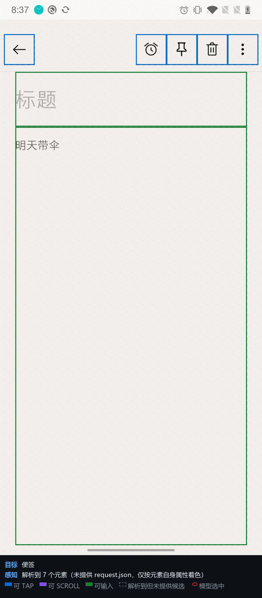
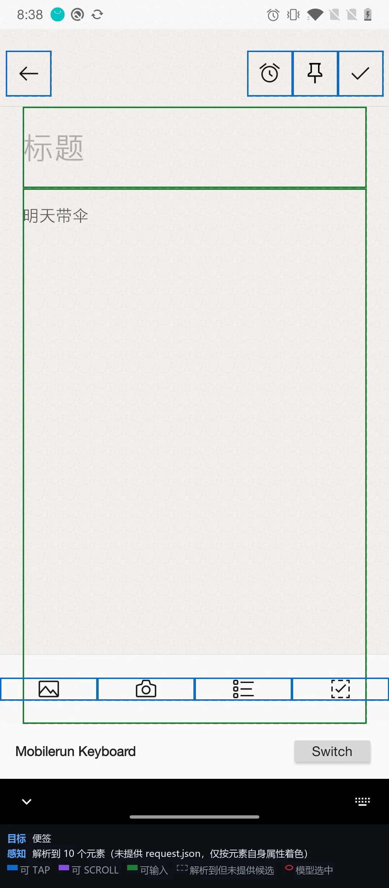
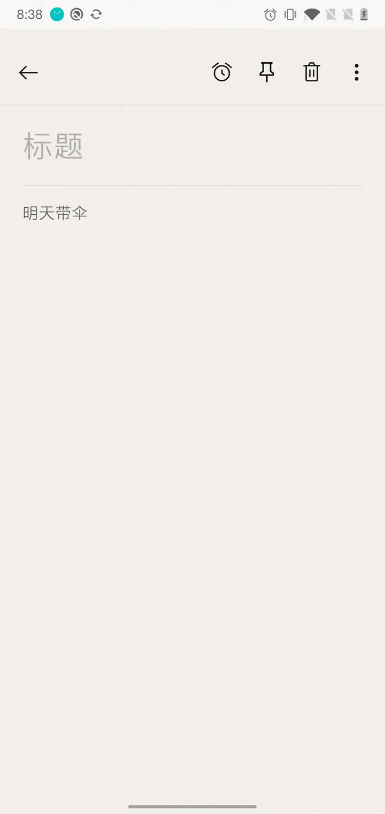
| 终态校验（读无障碍树） | 结果 |
|---|---|
| 明天带伞 | 出现 |
| # | 类型 | 参数 | 说明 |
|---|---|---|---|
| 1 | tapText | 始终允许 | 一次性权限弹窗 |
| 2 | sleep | 1800 | 固定等列表页 |
| 3 | tap | 949, 2149 | 点新建便签（FAB 无文本，只能写死坐标） |
| 4 | sleep | 2000 | 固定等编辑器打开 |
| 5 | type | 明天带伞 | 走 Portal 键盘灌入中文 |
| 6 | sleep | 900 | 固定等输入落盘 |
| 7 | tapText | 保存 | 点右上角「保存」 |
| 8 | sleep | 2000 | 固定等返回列表 |
| 9 | expect | 明天带伞 | 断言列表里出现这条便签 |
脚本引擎与 Jev 引擎共用同一份 PortalDevice，差的只是「下一步做什么」由谁决定：这里由上面这张表决定。
产物目录 artifacts/cases/L3-note-script
清单不是手工整理的，而是直接问 Portal：content://com.mobilerun.portal/packages
一次性返回全部「可被 LAUNCHER Intent 启动」的应用，共 38 个（系统 15 / 第三方 23）。
Agent 只有拿着这份白名单，才有资格选择 OPEN_APP 这个动作——
「能打开哪些 App」对模型来说是已知输入，不是它自己猜的。
| 名称 | 包名 | 版本 | 本项目用途 |
|---|---|---|---|
| Breeno 语音 | com.heytap.speechassist | 6.0.5 | |
| 信息 | com.oneplus.mms | 5.0.0.201211184018.f | |
| 商店 | com.heytap.market | 26.8.1_CN | |
| 图库 | com.oneplus.gallery | 3.7.28 | |
| 录音机 | com.oneplus.soundrecorder | 2.0.0.191031181032.7 | |
| 文件管理 | com.oneplus.filemanager | 2.4.0.191101165428.b | |
| 日历 | com.oneplus.calendar | 1.9.0.200907161341.4 | |
| 时钟 | com.oneplus.deskclock | 5.2.0 | 长程场景 L2 |
| 浏览器 | com.android.browser | 5.0.405 | |
| 游戏空间 | com.oneplus.gamespace | 2.4.2.0.200928213111 | |
| 电话 | com.android.dialer | 4.4.2 | |
| 相机 | com.oneplus.camera | 3.8.114 | |
| 设置 | com.android.settings | 10 | |
| 通讯录 | com.oneplus.contacts | 3.1.4 | |
| 钱包 | com.finshell.wallet | 3.5.0 |
| 名称 | 包名 | 版本 | 本项目用途 |
|---|---|---|---|
| APK安装工具 | com.uptodown.installer | 0.2.55 | |
| Chrome | com.android.chrome | 150.0.7871.186 | 早期示例 |
| ES文件浏览器 | com.estrongs.android.pop | 4.4.3.7 | |
| FlClash | com.follow.clash | 0.8.98 | |
| Gemini | com.google.android.apps.bard | 1.0.946899233 | |
| com.google.android.googlequicksearchbox | 17.6.59.ve.arm64 | ||
| Mobilerun Portal | com.mobilerun.portal | 0.7.25 | 感知层本体 |
| Play 商店 | com.android.vending | 53.0.27-29 [0] [PR] | |
| 便签 | com.oneplus.note | 3.4.0.200226141241.9 | 长程场景 L3 |
| 卡券 | com.oneplus.card | 3.4.9.210312102403.9 | |
| 天气 | net.oneplus.weather | 2.5.1.191102143751.f | |
| 夸克 | com.quark.browser | 10.15.0.1125 | |
| 小红书 | com.xingin.xhs | 9.41.2 | |
| 微信 | com.tencent.mm | 8.0.76 | |
| 拼多多 | com.xunmeng.pinduoduo | 8.19.0 | 长程场景 L1 |
| 智能家居 | com.heytap.smarthome | 1.0.9_c55e477_200319 | |
| 汽水音乐 | com.luna.music | 21.0.0 | |
| 淘宝 | com.taobao.taobao | 10.65.0 | |
| 番茄免费小说 | com.dragon.read | 7.3.7.33 | |
| 美团 | com.sankuai.meituan | 12.63.202 | |
| 计算器 | com.oneplus.calculator | 2.0.0 | |
| 豆包输入法 | com.bytedance.android.doubaoime | 1.3.17 | |
| 阅读 | com.heytap.reader | 9.15.0 |
openrouter.ai/api/alpha/decisions ·
模型 ~typesafe/jev-latest · 全部截图按项目约定压成 WebP · 生成于 2026-09-18 12:31:01